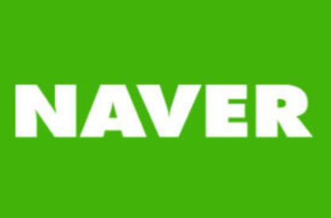

네이버는 대한민국의 포털 사이트이다.
1997년 2월 26일 이해진, 권혁일, 김보경, 구창진, 오승환, 최재영, 강석호
등으로 구성된 삼성SDS의 사내 벤처에서 '웹글라이더'라는 이름으로 시작해
1998년 1월에 분리된 네이버컴 주식회사에서 운영하다가
2000년 자회사인 한게임과 합병하여 NHN이 된 후 재분리하여
현재는 네이버 (기업)에서 운영하고 있다. 네이버는 '항해하다'라는 뜻의
Navigate와 '-하는 사람'의 접미사 -er이 만나 탄생한 이름이다.
이는 '정보의 바다라고 일컫는 인터넷을 항해하는 사람'을 의미한다.